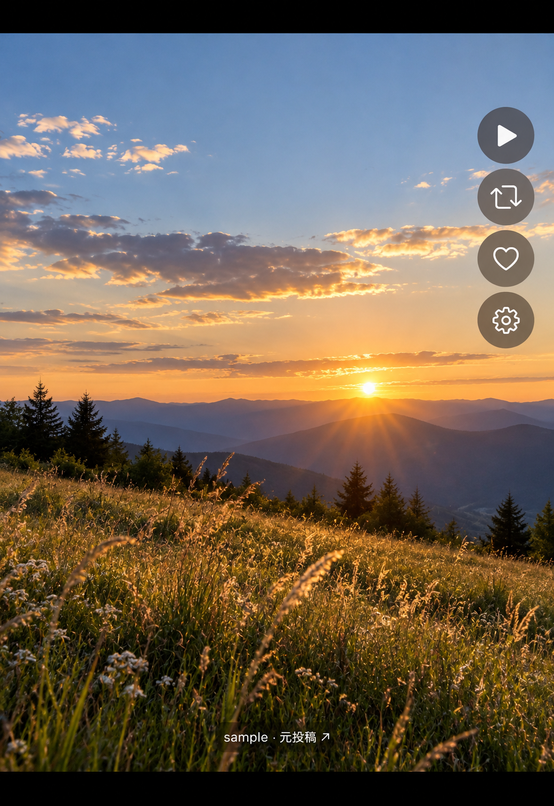
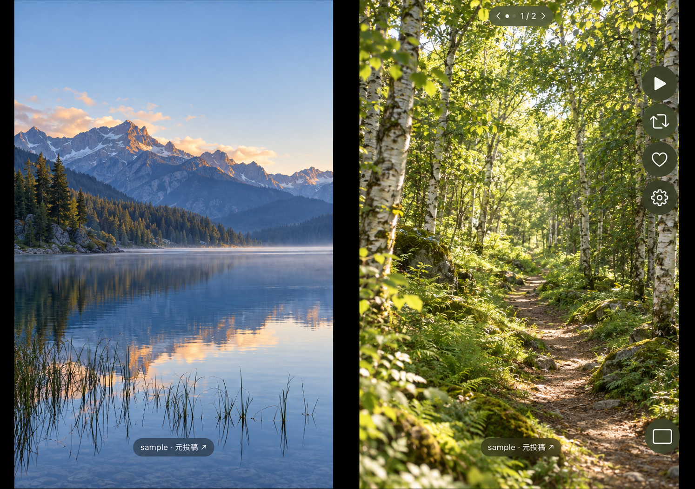

写真に集中するために。
egviewは、自分のTumblrアカウントのダッシュボード、ライクした投稿、所有ブログの画像・動画を、黒背景の全画面で眺める個人用アプリです。通常のiPhoneは4方向の単一表示、iPadは4方向と横長領域での単一・デュアル表示に対応。iPhone Duoはアウターとインナーの縦横表示に対応し、インナー横では2つのメディアを並べられます。
最初は縦横比を保って画像全体をフィットさせ、余白は黒に。本文やキャプションは表示せず、ページ表記・小さな出典ラベル・操作バーを写真に重ねます。画像や投稿の切り替えにはスライドやフェードを付けません。ピンチで気になる部分を拡大できます。
気に入った投稿は、投稿全体を自分のブログの予約投稿キューへリブログできます。新しい画像のアップロードやオリジナル投稿の作成は行いません。
Englishと日本語に対応
iPhone・iPad・Duoの操作バー、設定、確認画面、操作案内、時計の日付・曜日はアプリの言語に従います。端末の優先言語から自動選択し、端末設定でegviewだけの言語も指定できます。変更後はアプリを再起動してください。対応言語が選ばれない場合は英語を表示します。
接続案内はブラウザの言語に従って英語・日本語を表示します。Tumblr自身のアクセス許可画面は別で、TumblrのWebアカウントの言語設定を確認してください。
egview supports English and Japanese on iPhone, iPad, and iPhone Duo. Choose your preferred app language in the device settings, then relaunch egview. Blog names and post content stay as provided by Tumblr. The app is in development and being tested through TestFlight; public distribution and tester recruitment have not started.
iPhone Duoで、閉じても、開いても。
iPhone Duoのシミュレータで撮影された2点のスクリーンショットをもとにした掲載用の画面例です。写真は新しく生成した風景に、ブログ名は架空の「sample」に差し替えています。
iPhone Duo アウター・縦


iPhone Duo Simulator／2026年10月16日提供
写真のそばに、4つの操作。
アウター縦の新規起動では、再生・リブログ・ライク・設定が右上に並びます。回転時は端末上の操作位置を保ち、図柄を正立させる設計です。
下部の「ブログ名 · 元投稿 ↗」から元の投稿へ。下スワイプで操作UIを隠すと、画像に集中できます。もう一度下スワイプすると再表示します。
iPhone・iPad・Duoとも再生ボタンを常設し、現在の画像・動画からスライドショーを始めます。通常シングル閲覧では、出典の下にサムネイルバーも表示します。
iPhone Duo インナー・横／デュアル表示


iPhone Duo Simulator／2026年10月16日提供
掲載画像は、シミュレータの実画面を参考に写真とUIを画像生成で再構成したものです。無加工のスクリーンショットではなく、2026年10月16日の表示をもとにしており、後から追加したサムネイルバーや英語UIは示していません。UIの細部は実際の表示と異なる場合があります。端末枠は説明用の模式図です。Apple公式の製品画像・正確な筐体寸法を示すものではありません。
主な機能
画像と無音動画を、全画面で
画像全体をフィットし、ピンチで1〜5倍に拡大。直接再生できる動画は無音で自動ループします。動画専用の再生・シーク・音量UIは表示しません。
PhotosetとGIF
投稿内の画像・動画は左右スワイプで移動し、GIFはアニメーション再生。Duoデュアルではどちらの面のスワイプでも左右の表示組が連動します。
サムネイルから素早く移動
通常シングル閲覧では小画像を横一列に表示。小画像のタップや横スワイプで投稿を選べます。対応機器では、スワイプで画像・動画の表示が切り替わったときに軽く振動し、タップでは振動しません。Photosetは先頭の1枚が代表で、バーから移動すると先頭へ戻ります。GIF・動画の小画像は静止画です。表示済みの小画像は容量の範囲内で再利用し、読み込み失敗は、バーを表示したまま操作を止めて3秒たつと自動再試行します。デュアル表示とスライドショーではバーを表示しません。
必要な画像を先読み
通常は現在を含む10投稿、省エネルギーモードでは3投稿を順次準備します。Photosetは1投稿として全画像が対象。APIが提供する高画質候補を優先します。動画の小画像を準備する際にも通信が発生する場合があります。
キューへリブログ・ライク
ダブルタップや操作バーで投稿全体を選んだ所有ブログのキューへ。成功後に次へ進みます。ハートの付与・解除では同じ投稿に留まります。
スライドショーと時計
順再生とシャッフルで自動送り。間隔は5秒〜10分の8種類、時計は日付・曜日・秒の有無で6種類。一時停止・再開、時計の切り替えも操作バーから行えます。
UIを隠す・1枚を保存
下スワイプで操作UIを切り替え、画像の長押しで現在の1枚を保存確認へ。写真のフルアクセスを許可するとegviewアルバムへ保存します。動画保存には対応しません。
表示先を選ぶ
ダッシュボード、ライク、所有ブログを切り替えられます。ダッシュボードでは自分の所有ブログの投稿や、自分が元投稿者のリブログを除外します。
端末内の一時キャッシュ
画像は取得から72時間を期限とし、既定上限200MB。上限変更・使用量表示・手動削除に対応。動画ファイルやオフライン用の動画キャッシュは作りません。
表示対象は、公式APIのtext／photo／video投稿に含まれる画像と直接再生動画です。 NPFの画像・動画が混在する投稿も扱い、本文は表示しません。Web埋め込みだけの動画は対象外。同じ元投稿のリブログは最初の1件だけを表示し、ダッシュボードの自分投稿除外はライクや所有ブログには適用しません。
Webの「お気に入りをトップに表示する」と同じ推薦順には未対応です。Webの「フォロー中」と比較する場合は、Tumblr側のこの設定をOFFにすることを推奨しています。対象外投稿の除外やAPIの取得範囲により、件数・順序の完全一致は保証しません。
未準備の画像は現在の画像を保って待ち、準備待ちが3秒を超えた場合だけ通知します。読み込み失敗やAPI制限では停止・手動再開が必要な場合があります。通信中の瞬時表示や、アプリ停止中の厳密な72時間での物理削除は保証していません。
通信量と推奨環境
Wi-Fi環境での利用を推奨します。 高画質画像・GIFの先読みと動画のストリーミング再生で、モバイル回線では大量のデータ通信（パケット）を消費します。 Photosetや長時間の閲覧、Duoの左右動画では通信量がさらに増える場合があります。
キャッシュ上限200MBは端末内の保存容量であり、通信量の上限ではありません。モバイル回線での新規起動時は大量通信の警告を表示し、選択まで初期読み込みを待ちます。「次から表示しない」は警告を隠す設定で、通信を禁止する設定ではありません。設定の「通信」から警告をリセットできます。
Wi-Fi専用制限や、起動後の回線切り替え・背景復帰時の追加警告はありません。必要ならiPhoneの設定からegviewのモバイルデータ通信をOFFにしてください。アプリから自動でOFFにする機能はありません。
基本的な使い方
- 設定最上段の「Tumblrアカウント」から接続し、公式認可画面で読み取り・リブログ・ライク等の権限を許可します。接続と所有ブログの取得に成功すると設定を閉じます。未接続でも同梱サンプルを試せます。
- ダッシュボードを閲覧します。設定からライク・所有ブログに切り替え、閲覧先／リブログ先の所有ブログも選べます。
- 画像領域のタップで次の投稿、左右スワイプで投稿内の画像・動画へ。ダブルタップは投稿全体をキューへリブログする操作です。
| 操作 | 動作 |
|---|---|
| 画像領域の1本指シングルタップ | 次の投稿へ。Photosetの次の1枚とは別の操作です。 |
| 1本指ダブルタップ | 触れた投稿全体をキューへリブログ。成功後に次の投稿へ進みます。 |
| 左から右へスワイプ | 前の画像・動画へ。先頭なら前の投稿へ。Duoデュアルは直前の左右組を復元します。 |
| 右から左へスワイプ | 次の画像・動画へ。末尾なら次の投稿へ。Duoデュアルは左右の表示組を進めます。 |
| 下スワイプ | ページ表記・出典・サムネイルバー・操作UIを非表示／再表示。通常閲覧では次投稿でも状態を保ちます。 |
| 画像を長押し | 現在の1枚を保存確認へ。Photoset全体の一括保存と動画保存には対応しません。 |
| ピンチ／拡大中の2本指ドラッグ | 1〜5倍に拡大・縮小し、画像内を移動。投稿・画像切替や再訪では通常サイズへ戻ります。 |
| 2本指タップ | ダッシュボードへ戻って再取得します。 |
| サムネイルの小画像タップ／横スワイプ | タップした小画像を中央へ、または横スワイプ中の中央の投稿へ移動。Photosetは先頭へ戻ります。スワイプによる表示切替時だけ軽く振動し、タップは無振動です。バー内ではリブログ・保存を行いません。 |
| 操作バーの再生 | iPhone・iPad・Duoとも現在の画像・動画から開始。デュアルでは右側が対象です。戻る操作は画像領域の左右スワイプを使います。 |
| リブログ／ハート | リブログ成功で次投稿、ライク付与・解除では留まります。Duo／iPadのデュアルでは共通バーは右側が対象です。 |
| 設定 | 表示先、所有ブログ、接続、Tumblrでの管理、キャッシュ、通信、操作案内、診断を開きます。 |
操作ボタンと出典リンクは個別操作を優先します。UI非表示中もタップ・スワイプ・保存・ピンチを使えます。画像準備中の戻る操作は待機中の前進を取り消します。リブログの失敗・結果不明やフィード終端では現在位置を保ち、結果不明の書き込みは自動再送しません。VoiceOver向けのボタン・カスタムアクションも用意しています。
iPadで、縦でも横でも。
縦は単一表示、横長での新規起動は左に操作案内・右に現在のメディアを表示するデュアルです。縦から横へ回した場合は単一表示を保ち、右下のボタンで切り替えます。狭いウインドウでは単一表示になります。
操作バーは縦横とも下部中央。設定を開いたまま回転でき、閲覧位置とUI非表示の状態を保ちます。デュアルの共通操作は右側が対象で、Photosetのスワイプは左右組を連動させます。
接続はiPhone・Duoと同じシステム認証画面で行います。iPadで入力時に認証画面が終了する場合は、端末のキーボード一覧に「英語（アメリカ）」を追加して残すことで回避できたとの開発者の報告があります。日本語を先頭にしたままで構いません。すべての環境での解消を保証するものではありません。
Duoの2つの画面と操作
アウターは単一表示。インナー横で起動すると左に操作案内、右に現在のメディアを表示し、右下のボタンで単一／デュアルを切り替えられます。縦起動後に横へ回すだけでは自動でデュアルへ変えません。
デュアルの投稿送りでは旧右ページを左へ引き継ぎ、右に次投稿の先頭を表示します。Photosetはどちらの面からスワイプしても左右組を連動して移動。共通バーのリブログ・ライク・再生は右が対象ですが、左をダブルタップしたり長押しした場合は左の投稿・画像が対象です。
単一表示への切り替えや端末を閉じる操作では、右側のページ・再生状態を採用します。インナー横の設定は右側、その他のDuo状態は全画面。設定中は両面の動画・GIFを停止します。
端末構成と側面操作の説明はAppleのiPhone Duoデザインガイド ↗を参照しています。現在の対応は検証したSimulator環境を基準としており、実機・将来モデル・半開き・Split Viewを含む全条件の適合確認は完了していません。
自分のペースで、スライドショー。
iPhone・iPad・Duoとも常設の再生ボタンから現在の画像・動画で始まります。デュアルなら右を引き継いで単一表示になります。開始だけを理由に最新フィードを取り直しません。
開始した現在投稿を起点に、60生投稿ずつ、最大720生投稿の範囲から表示候補を集めて周回します。自分の投稿・重複・対象外も上限に数えるため、720件すべてが表示される意味ではありません。順再生は投稿内の全メディア、シャッフルは各投稿の先頭を中心に再生。上限後もアクセス再確認・画像再取得・動画通信は続きます。
操作バーは一時停止／再開・シャッフル・時計・終了。下スワイプで表示し、UI操作から10秒で隠れます。自動送り中は手動の投稿移動・リブログ・ライク・設定を無効にし、停止中はピンチと画像保存を使えます。時計は操作UIを隠しても表示します。
一時停止は投稿の自動送りを止め、表示中のGIF・動画はループを続けます。背景から戻ると送り停止。モード中は停止中も自動ロックを抑え、終了確認後は選択フィードを再読み込みします。iPad・Duoは開始前のレイアウトへ戻ります。
表示範囲とコンテンツラベル
公式APIと利用者のアカウント設定で利用できる画像・直接動画を対象にします。成人向けとマークされたブログについては、個別投稿と代表画像の取得を確認しています。すべての投稿の表示や、ラベル・表示設定の反映を保証する確認ではありません。
リブログは標準APIで元投稿全体をキューへ追加します。egviewから追加のMatureラベルやNSFWタグを送る設定はありません。元投稿のラベルがキュー内で継承されるかは、実機で引き続き確認しています。
egviewはTumblrの非公式アプリであり、Tumblrの運営・承認を受けたものではありません。参考：Tumblrのコンテンツラベルの説明 ↗
アカウントと画像の扱い
Tumblrのパスワードはアプリ内で収集しません。公式OAuthのコード交換・トークン更新に認証サービスを使い、端末の認可情報はKeychainへ保存します。画像キャッシュと派生した小画像は端末内の一時領域に置き、端末間で同期しません。動画はストリーミングし、アプリは動画ファイルやオフライン用キャッシュを作りません。
更新トークンは認証サービスが暗号化した形式で端末へ渡し、認証への連続したアクセスを制限します。旧形式の接続では更新時に一度再接続が必要です。設定からキャッシュを削除できます。ログアウト時は端末の認可情報と画像キャッシュを削除してサンプルへ戻り、再接続成功時も以前の画像を削除します。診断の共有は利用者が共有操作を選んだ場合だけ行います。
長押し保存では写真のフルアクセスを求め、現在の画像の圧縮データを再圧縮せずegviewアルバムへ追加します。写真へ保存した画像はキャッシュ削除・ログアウトでは消えず、iCloud写真の設定に従います。保存済みの写真は写真アプリで管理してください。
接続先と保存・削除の詳細はプライバシーポリシーのegview欄で説明しています。
開発状況と公開について
iOS／iPadOSプロトタイプ0.1.45をTestFlightでテスト中です。一般配布・試用募集は行っていません。 画像・GIF・無音動画、Photoset、ピンチ、ライク、キューリブログ、UI非表示、画像保存、スライドショー、Duo／iPad表示、通常シングルのサムネイルバーを実装しています。
画像閲覧・キュー追加・動画切り替え等には開発者の確認報告があり、実APIでは1,500生投稿の取得報告があります。0.1.38のiPad認証・縦横閲覧・デュアル・スライドショーは開発者が確認済みです。0.1.45の今回改良は、開発者が新ビルドを試して想定どおりの動作と確認しました。TestFlightでの配信・テスト可能も別途確認済みです。開発記録には自動回帰2,226項目、3機種のSimulator各8ケース、署名なしDebug／Releaseの成功があります。合成データの検証、Simulator画面、実機の結果は区別しており、長時間の総メモリ・発熱・通信量、実APIでの10,000件規模、写真権限・元ラベル継承等の個別条件は確認を残しています。
現在の対象はiOS／iPadOS 18以上の通常iPhone、iPhone Duo、iPadです。macOS版は今後の予定で、公証取得を予定しています。完成時期、一般向け配布方法、価格は未定です。App Store公開は将来検討します。
掲載内容はに、0.1.45／仕様v0.52／認証サービス0.6.1と照合しました。今回の更新は紹介文の整合で、新しい実機性能測定は行っていません。画面例の撮影元は2026年10月16日提供のiPhone Duo Simulatorです。提供画像のビルド番号は未確認です。